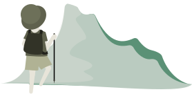
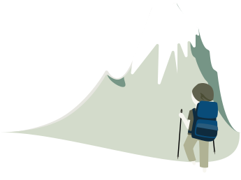

關於北山
『一起北山』是一個針對北部山區步道的資訊網站，該網站的名稱『北山』取自台語諧音Pah-Suann ，旨在讓使用者快速獲取北部山區各種步道的相關資訊。


-
我們清楚地將北部山區步道分為四個主要類別，以方便使用者根據自己的時間和身體狀況尋找合適的行程：
- 簡單置身大自然的一小時山： 此類步道適合那些希望在短時間內能感受大自然氛圍的人。這些步道可能不需要太多體力，即能享受清新空氣和自然風光。
- 初階之動動筋骨的兩小時山： 此類步道適合想要稍微挑戰自己的人。雖然相對較長，但不會太耗時，提供了適中的鍛鍊。
- 中階鍛鍊身體的四小時山： 這些步道可能需要較長時間和更多體力，更深入大自然體驗和挑戰。
- 挑戰自我的六小時以上山：此類步道挑戰性較高，需要更多體力、耐力與對山巒的基本知識，但回報也更豐富，讓挑戰者有機會探索更遠、更高的山區美景。
這樣的分類方式能考慮到北部繁忙的上班族，讓他們能根據自己的時間和身體狀況找到適合的假日行程，到大自然中放鬆身心，感受山林之美。『一起北山』希望提供清晰明確的資訊，讓使用者輕鬆規劃自己的登山健行行程。
網站開發團隊
指導老師：TSuiling
Chloe Wu
網頁後端 / 資料庫管理
無意間接觸到網站相關領域，覺得資料的整合與功能的設計因為自己的想法而被顯示出來，覺得有趣且有成就感，開始自學一路到上課，持續累積實力中，目標成為一名專業的後端工程師。